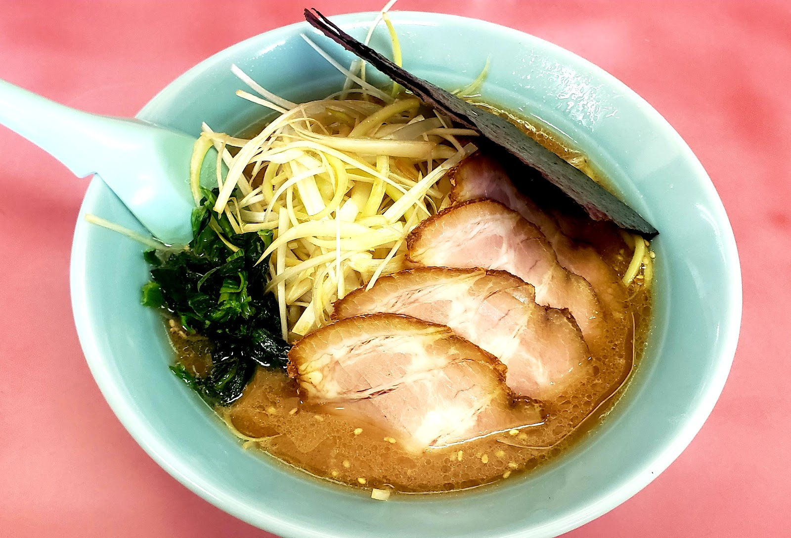
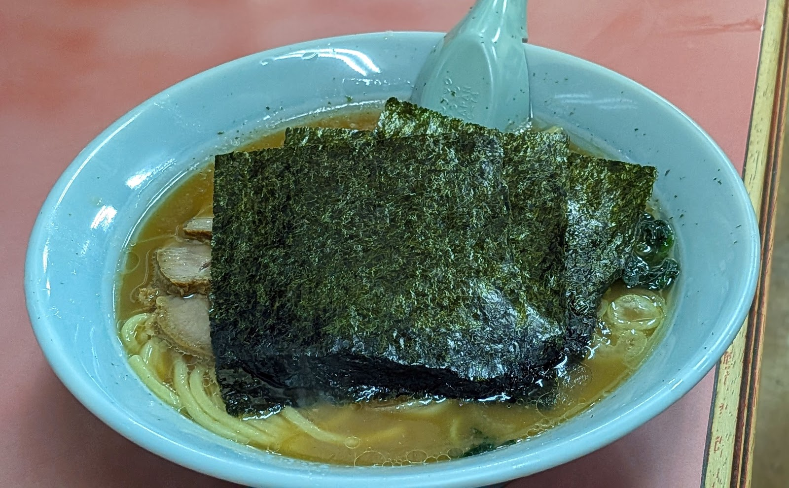

山下家のお品書きは、スープの種類やトッピングによって、いろいろな組み合わせをお楽しみいただけます。価格・詳しい品目は店頭の食券機にてご案内しておりますので、ここでは山下家の味の特徴をご紹介します。
Soup
スープの種類
ベースとなるのは豚骨を使った家系寄りのスープ。そこに醤油・塩・味噌など、複数のスープをご用意しており、その日の気分に合わせてお選びいただけます。合わせる麺は、地元・菅野製麺所の中太プリプリ麺です。

写真提供: yasuki0719（Googleマップ）

写真提供: とりで工房（Googleマップ）
How to order
食券制についてのご案内
ご注文は入口の食券機での食券制です。価格・詳しいメニューは店頭の食券機にてご確認ください。